Conócenos
Nuestra historia
Esta es la trayectoria de Distribuciones Valentín Martín, marcada por la pasión y el buen hacer de su fundador.
Quiénes somos · Historia
- 1982
El kilómetro cero en Medina del Campo
Después de trabajar primero con Fernando Casado Delgado y luego con Manuel Blanco como vendedor en sus respectivas distribuidoras, desde 1982 hasta 1990, Valentín Martín comienza como autónomo y con una furgoneta a repartir en autoventa productos de alimentación por las tiendas de la zona. La primera marca a distribuir fue la emblemática fábrica de postres Flan Dhul.
Tras trabajar de vendedor con Fernando Casado Delgado y Manuel Blanco hasta 1990, Valentín se hace autónomo y reparte con una furgoneta en autoventa. Su primera marca: Flan Dhul.
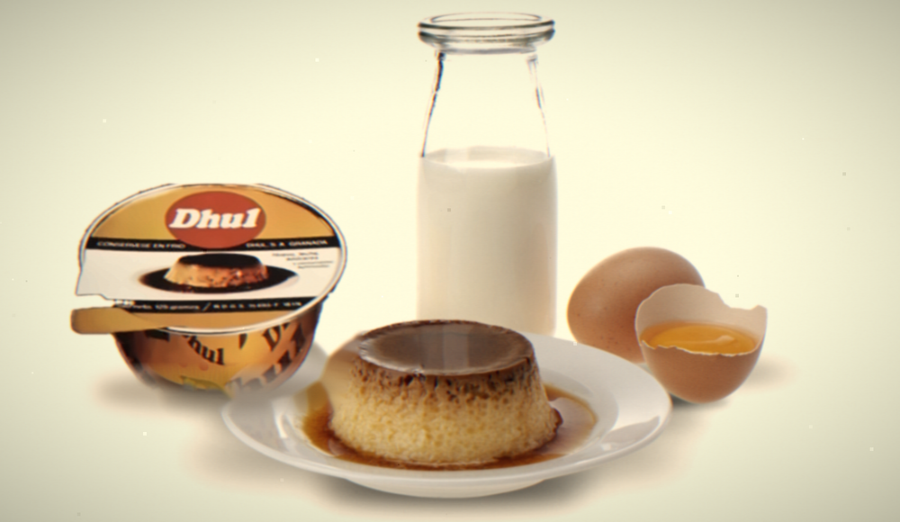
- 1986
Primeras rutas comarcales
Con la leche fresca de RAM, pasteurizada en bolsa, de fecha de caducidad corta, en una Mercedes DKV isotermo.
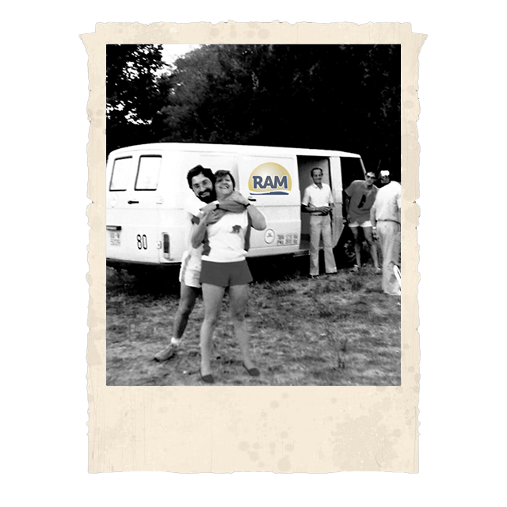
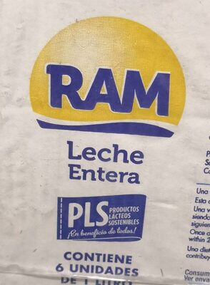
- 1989
Primer producto de corte hostelero
De la mano de Antonio Sanz: Palacio de Bornos Verdejo y nuestro primer cava de Castilla y León.

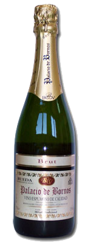
- 1993
Comenzamos la distribución del Grupo Leche Pascual
Incorporamos una marca de referencia en España, con la leche en brik como bandera y un gran portfolio: primeros yogures sin frío, nata y mantequilla Pascual y el emblemático zumo Zumosol. Pasamos de la autoventa a la preventa y modificamos drásticamente la manera de distribuir.
Llega una marca de referencia: leche en brik, yogures sin frío, nata, mantequilla y el zumo Zumosol. Pasamos de la autoventa a la preventa.

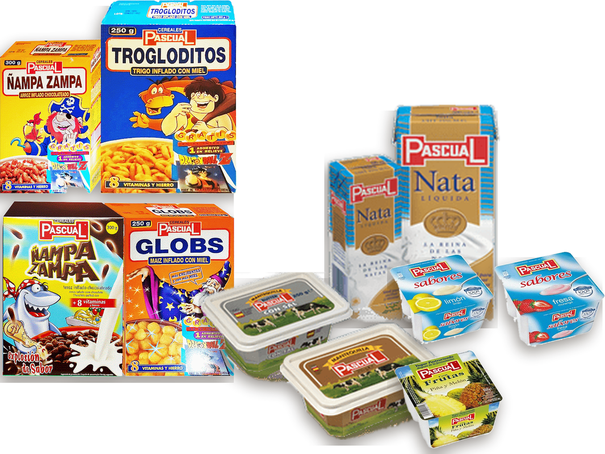
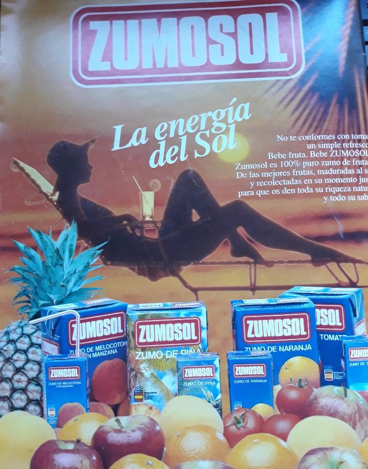
- 1998
El producto que nos abrió la puerta de la hostelería
Fue el salto más cuantitativo que dimos, con la incorporación de cientos de clientes a los que nunca habíamos visitado ni vendido. La implantación de este zumo con leche fue todo un éxito, llegando a ser el distribuidor que más Bio Frutas vendió de España por renta per cápita.
Cientos de clientes nuevos de golpe. Fue un éxito: llegamos a ser el distribuidor que más Bio Frutas vendió de España por renta per cápita.
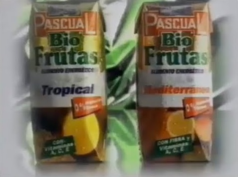
- 2001
Nueva nave en el polígono
Nos trasladamos a la nave del polígono industrial en la que seguimos hoy.
- 2004–2008
Salamanca y alrededores
Con Pascual en alimentación llegamos a Salamanca capital y pueblos de alrededor, y sumamos otro vehículo de reparto, un Ford Transit. Nuestro ámbito de reparto pasó de 50 a 90 km.
Con Pascual en alimentación llegamos a Salamanca y alrededores, y sumamos una Ford Transit. El reparto pasó de 50 a 90 km.
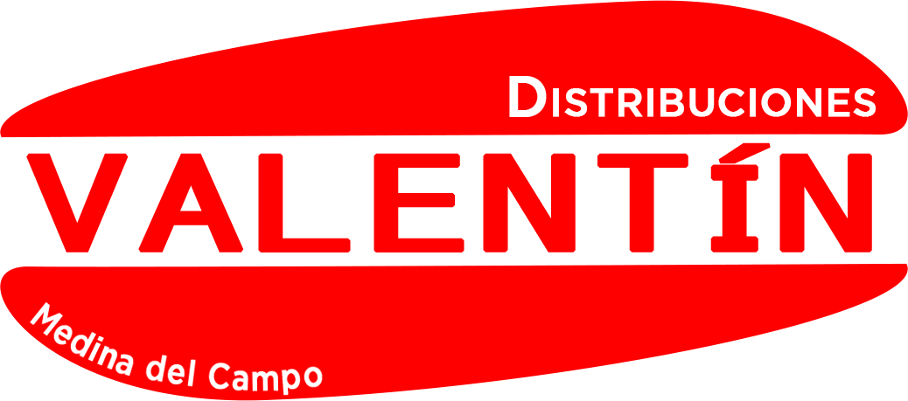
- 2011
Asentamiento en el canal
La llegada del café asentó los cimientos que veníamos construyendo en este canal, y qué mejor complemento para nuestra leche que un producto tan hostelero como este.
La llegada del café asentó los cimientos de este canal: el mejor complemento para nuestra leche.
- 2012
Un Ribera del Duero con entidad propia
Después de muchos intentos en esta denominación por fin dimos con lo que buscábamos. De la mano de su nuevo director comercial, J. Manuel Gómez, emprendimos la distribución de la Bodega Cooperativa Pinna Fidelis, con una filosofía clara, muy conocida en toda la provincia, y de la cual sentimos mucho orgullo de poder comercializar sus vinos.
Tras muchos intentos, y de la mano de J. Manuel Gómez, su nuevo director comercial, distribuimos la Bodega Cooperativa Pinna Fidelis, de la que nos sentimos orgullosos.
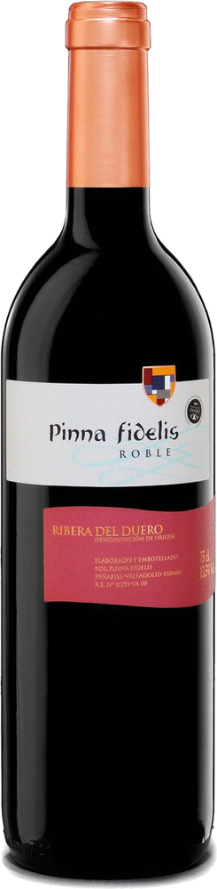
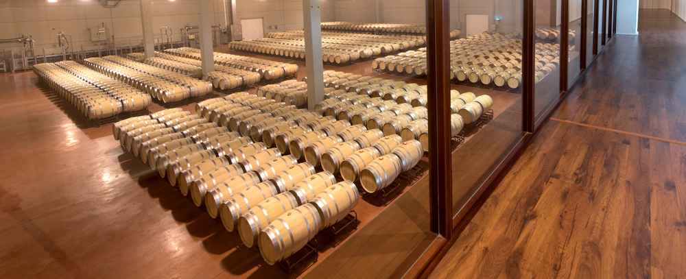
- 2016
Proveedor cárnico con un portfolio extenso
Ideal para llegar a la cocina de todos nuestros clientes, fabricante líder en productos derivados del cerdo y con artículos para distribuir en ambos canales.
Ideal para llegar a la cocina de todos nuestros clientes: fabricante líder en derivados del cerdo, con artículos para ambos canales.
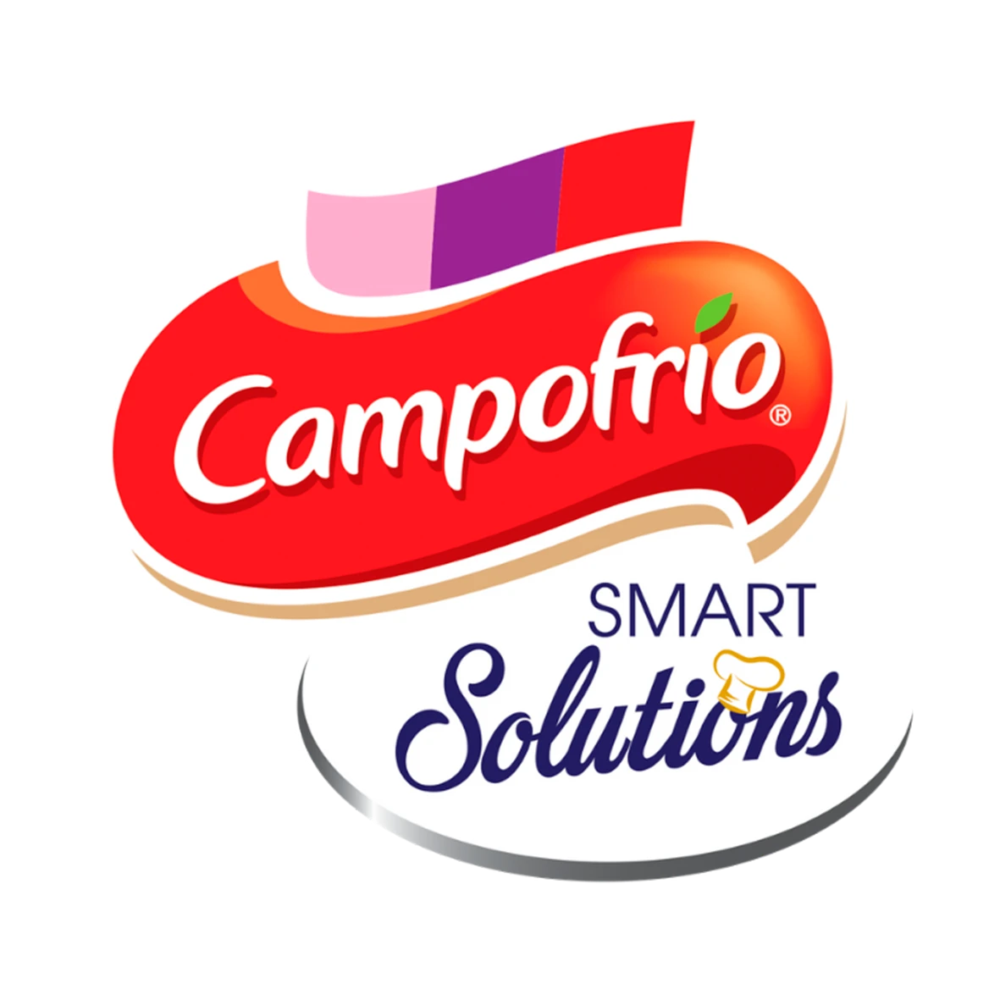
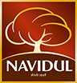
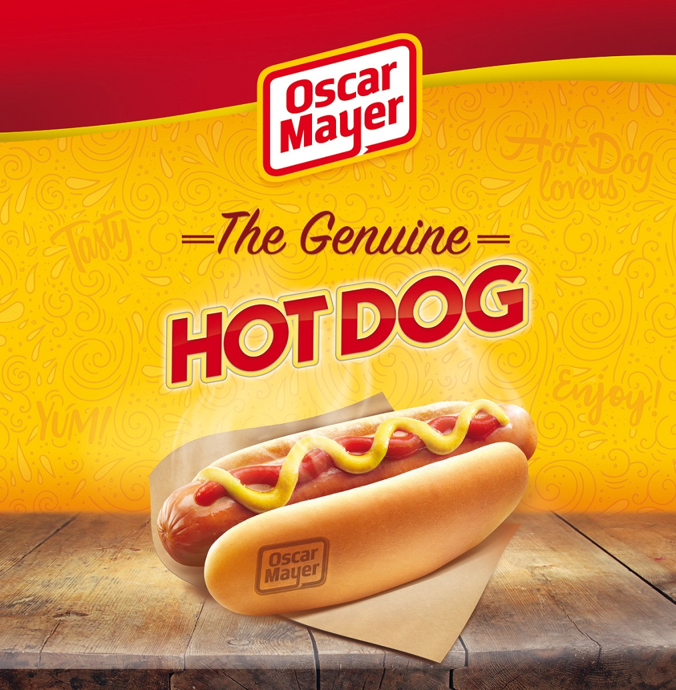
- 2020
Primer vehículo de reparto totalmente eléctrico
En plena pandemia del COVID estrenamos nuestro primer vehículo de reparto eléctrico, un Citroën ë-Jumpy.
- 2023
Incorporamos un nuevo sector muy ligado a la hostelería
Adjuntamos al portfolio el menaje, la vajilla, la celulosa, etc., al adquirir la actividad de Casa Muñoz, distribuidor de la zona, con motivo del cese por su jubilación.
Sumamos menaje, vajilla y celulosa al adquirir la actividad de Casa Muñoz, distribuidor de la zona, por su jubilación.
Y seguimos en ruta
Mapa ilustrativo, no a escala. El anillo exterior (90 km) se ilumina al llegar al hito de Salamanca (2004–2008). Faltan por recopilar algunas fotos de archivo.
Conoce al equipo